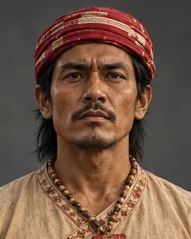

1667
লাচিত বৰফুকন
1622–1672 · Commander-in-chief and Borphukan

Retook Guwahati in 1667 and led the Ahom victory over a larger Mughal fleet at Saraighat in 1671. Died the next year, and his remains lie in a maidam at Jorhat.
Born 24 November 1622; died 25 April 1672 at Kaliabor. Fought at Alaboi in 1669.
Record confidence: high.
Sources have not yet been catalogued for this record.
1667

November 1667

1667

August 1669

1669–1670

1670

1671

March 1671

March 1671

1671

April 1672